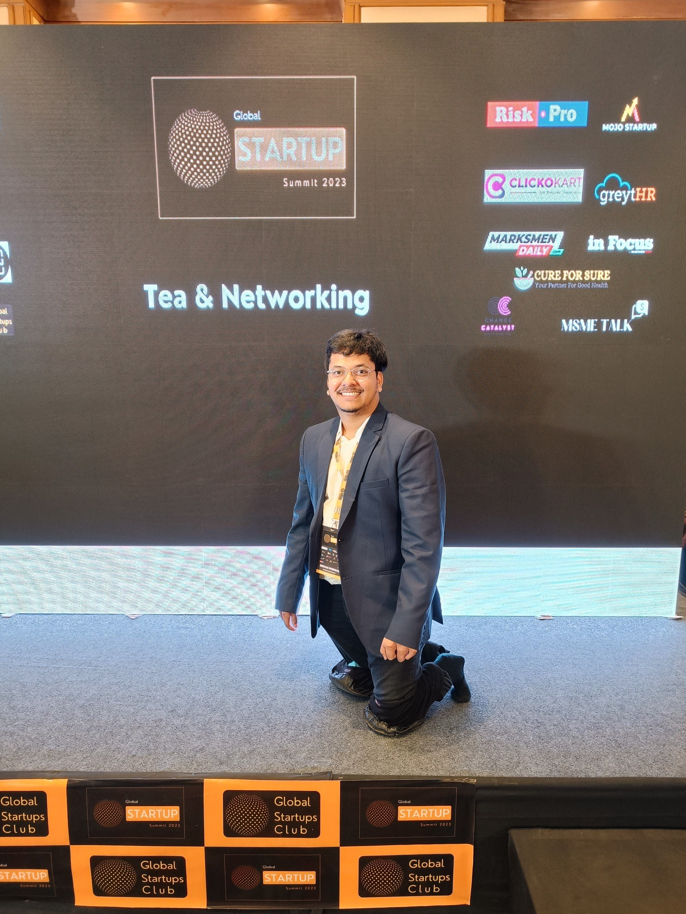
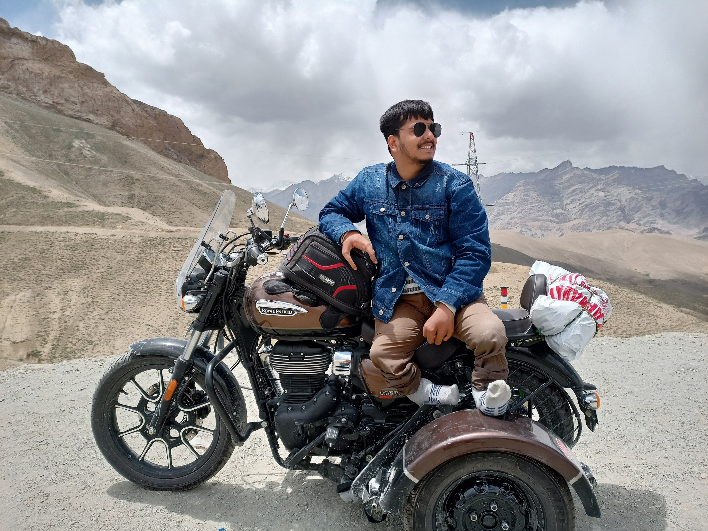
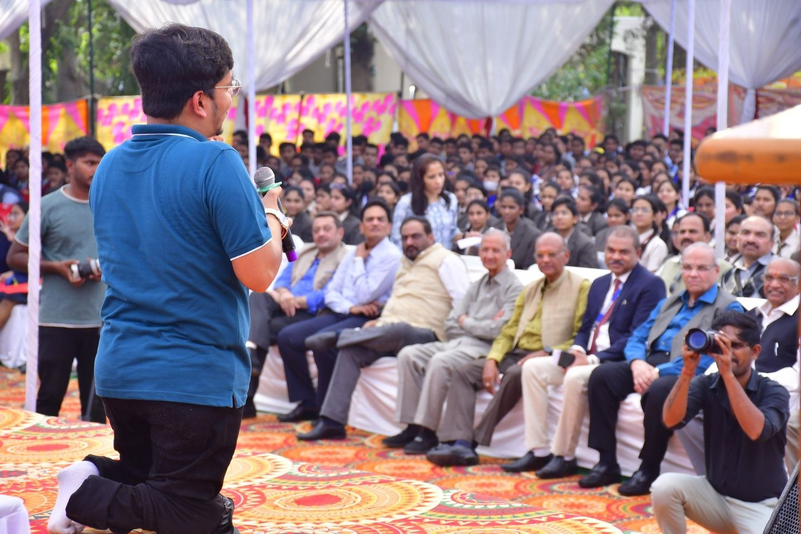
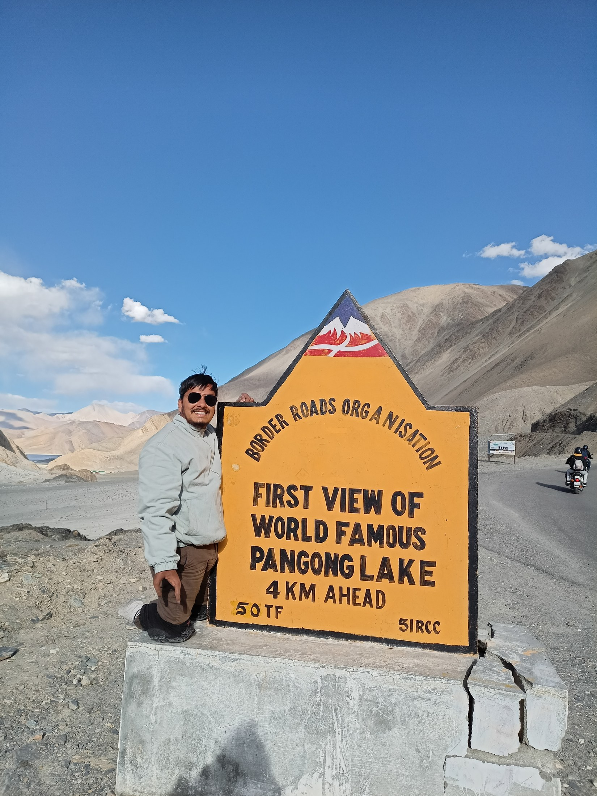

Disability advocacy
Challenging assumptions and encouraging equal participation. I bring lived experience into conversations about dignity, access and self-belief.
ADVOCATE. SPEAKER. EXPLORER.
IIT PATNA ALUMNUS · FORMER BSNL TELECOM OFFICER
I’m Shivam Porwal. I work to open doors for persons with disabilities — through learning, meaningful conversations, and the freedom to dream bigger.
Discover my impact ↘This is my story
SHIVAM PORWAL Rooted in purpose. Open to possibility.LIVE FULLYPeople reached through talks
and community programs
Of work across education,
advocacy and empowerment
A Ladakh expedition on
an adapted motorcycle
People to train and place
My next five-year goal

ONE LIFE. MANY POSSIBILITIES.01 / THE PERSON BEHIND THE PURPOSE
I grew up in Mahidpur, Madhya Pradesh, with a congenital disability and a determination to find my own way. Inaccessible classrooms and everyday barriers shaped my belief that opportunity should belong to everyone.
Education opened new possibilities for me. After clearing GATE, I went on to IIT Patna, completing my M.Tech in Computer Science and Engineering in 2020. I served the Government of India through Bharat Sanchar Nigam Limited (BSNL) as a Telecom Officer, contributing five years to public service in Madhya Pradesh. Today, I share what I’ve learned with students, families and persons with disabilities — helping build confidence, skills and a sense of independence.
Speaking, swimming, travelling and working with communities are all parts of the same purpose: living fully, and helping others see what is possible for them.
Let’s create opportunities together ↗02 / PURPOSE IN PRACTICE
My work begins with people — their aspirations, their voices, and their right to participate.
Challenging assumptions and encouraging equal participation. I bring lived experience into conversations about dignity, access and self-belief.
I founded Expertsmania to help persons with disabilities build skills and financial independence. Through free training in AI, data and other technology skills, I support learners on their path to employment, including work-from-home opportunities.
Working with colleges and NGOs, including SNEH Nagda and Jyot Foundation, Ahmedabad, to deliver learning and motivational sessions.
My five-year ambition is to expand free training and placement support across technology, digital marketing and design.
03 / CONVERSATIONS THAT MATTER

Through talks, poetry and storytelling, I connect with students, families and communities about self-acceptance, resilience and disability inclusion.

04 / LIFE, FULLY LIVED
A 5,000 km ride to Ladakh with my wife. A skydive from 15,000 feet in Dubai. Swimming, scuba diving and paragliding. Adventure is part of how I explore freedom, confidence and possibility.
Explore the adventures ↗05 / MOMENTS & MILESTONES
From community gatherings to mountain roads.
Select a collection, then open a photo to explore.
06 / IN THE NEWS
From my journey to IIT and public service to the open roads of Ladakh — features in The Better India and coverage in the Hindi press.
LET’S MAKE ROOM FOR POSSIBILITY
For speaking invitations, NGO collaborations, disability inclusion programs, or training enquiries — I’d love to hear from you.
Let’s connect ↗sporwal8989@gmail.comFollow the journey on Instagram @shivaminspires ↗